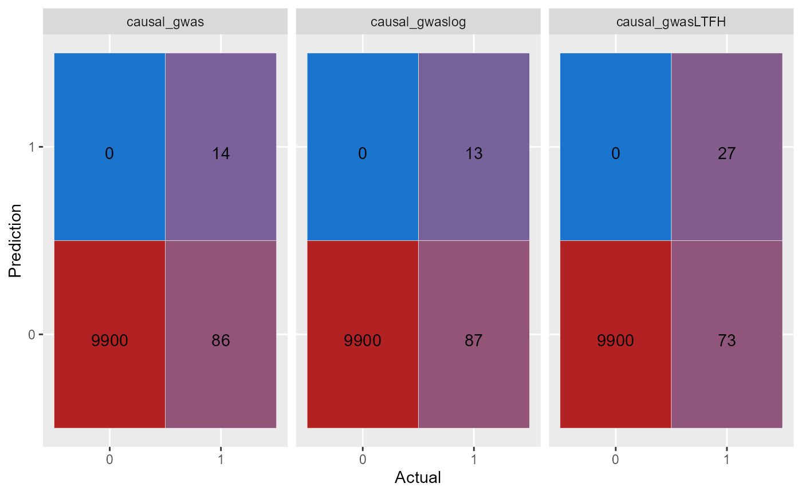

Comparison between GWAS and LT-FH
Comparison.Rmd
#data = snp_attach("example_data.rds")
data = snp_attach("genetic_data.rds")
data_ltfh = LTFH(data = data, n_sib = 2, K = 0.05, h2 = 0.5)
gwas_summary = GWAS(G = data$genotypes, y = data$fam$pheno_0, p = 5e-7, ncores = 3)
#> Warning: 'y.train' is composed of only two different levels.
gwaslog_summary = GWAS(G = data$genotypes, y = data$fam$pheno_0, logreg = TRUE, p = 5e-7, ncores = 3)
#> For 1 columns, IRLS didn't converge; `glm` was used instead.
gwas_LTFH = GWAS(G = data$genotypes, y = data_ltfh$l_g_est_0, p = 5e-7, ncores = 3)
library(tidyverse)
true_causal = (data$map$beta != 0) - 0
estimate = tibble(estimate_gwas = gwas_summary$estim,
estimate_gwasLTFH = gwas_LTFH$estim)
causal = tibble(causal_gwas = gwas_summary$causal_estimate,
causal_gwaslog = gwaslog_summary$causal_estimate,
causal_gwasLTFH = gwas_LTFH$causal_estimate)
k = causal %>%
pivot_longer(cols = everything(), names_to = "method") %>%
group_by(method) %>%
summarise("11" = sum(value == 1 & true_causal == 1),
"10" = sum(value == 1 & true_causal == 0),
"01" = sum(value == 0 & true_causal == 1),
"00" = sum(value == 0 & true_causal == 0)) %>%
pivot_longer(cols = !method) %>%
group_by(method) %>%
mutate(X = as.character(c(1,1,0,0)),
Y = as.character(c(1, 0, 1, 0)))
k %>%
ggplot(aes(x = X, y = Y)) +
geom_tile(aes(fill = value), colour = "white", show.legend = FALSE) +
ggplot2::geom_text(ggplot2::aes(label = sprintf("%1.0f", value)), vjust = 1) +
ggplot2::scale_fill_gradient(high = "firebrick", low = 'dodgerblue3', trans='pseudo_log') +
facet_wrap(~method)
sapply(X = estimate, function(pred,target) mean((pred-target)^2), target = data$map$beta) %>% knitr::kable(col.names = "MSE")| MSE | |
|---|---|
| estimate_gwas | 5.83e-05 |
| estimate_gwasLTFH | 7.22e-05 |
Plots
Power plot
beta = data$map$beta
gwas_df = gwas_summary %>%
mutate(true_causal = (beta != 0) - 0) %>%
filter(true_causal == 1) %>%
arrange(abs(estim)) %>%
mutate(power = cumsum(causal_estimate)/sum(true_causal), Method='GWAS') %>%
select(estim, power, Method)
gwaslog_df = gwaslog_summary %>%
mutate(true_causal = (beta != 0) - 0) %>%
filter(true_causal == 1) %>%
arrange(abs(estim)) %>%
mutate(power = cumsum(causal_estimate)/sum(true_causal), Method='GWASlog') %>%
select(estim, power, Method)
ltfh_df = gwas_LTFH %>%
mutate(true_causal = (beta != 0) - 0) %>%
filter(true_causal == 1) %>%
arrange(abs(estim)) %>%
mutate(power = cumsum(causal_estimate)/sum(true_causal), Method='LT-FH') %>%
select(estim, power, Method)
bind_rows(gwas_df, gwaslog_df, ltfh_df) %>%
ggplot() +
geom_line(aes(x = estim, y = power, color=Method)) +
xlim(-0.3, 0.3)
#> Warning: Removed 30 row(s) containing missing values (geom_path).
Manhattan plot
plt_gwas_man = manhattan_plot(gwas_summary, beta, thresholds = c(5e-7, 0.05))
plt_log_gwas_man = manhattan_plot(gwaslog_summary, beta, thresholds = c(5e-7, 0.05))
plt_ltfh_man = manhattan_plot(gwas_LTFH, beta, thresholds = c(5e-7, 0.05))
lgnd_m = cowplot::get_legend(plt_gwas_man + theme(legend.position = "top"))
plt_gwas_man_m = plt_gwas_man + theme(legend.position="none")
plt_log_gwas_man_m = plt_log_gwas_man + theme(legend.position="none")
plt_ltfh_man_m = plt_ltfh_man + theme(legend.position="none")
gridExtra::grid.arrange(plt_gwas_man_m,
plt_log_gwas_man_m,
plt_ltfh_man_m,
lgnd_m,
ncol=3,
nrow=2,
layout_matrix = rbind(c(1,2, 3), c(4,4,4)),
widths = c(4, 4, 4),
heights = c(5, 0.5),
top = c("Manhattan plots for GWAS, GWAS using logistic regression, and LT-FH"))
Scatter plot
plt_gwas_scat = scatter_plot(gwas_summary, beta)
plt_ltfh_scat = scatter_plot(gwas_LTFH, beta)
lgnd_s = cowplot::get_legend(plt_gwas_scat + theme(legend.position = "top"))
plt_gwas_scat_s = plt_gwas_scat + theme(legend.position="none")
plt_ltfh_scat_s = plt_ltfh_scat + theme(legend.position="none")
gridExtra::grid.arrange(plt_gwas_scat_s,
plt_ltfh_scat_s,
lgnd_m,
ncol=2,
nrow=2,
layout_matrix = rbind(c(1,2), c(3,3)),
widths = c(4, 4),
heights = c(5, 0.5),
top = c("Scatter plots for GWAS and LT-FH"))